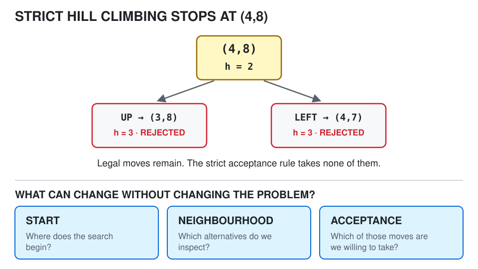
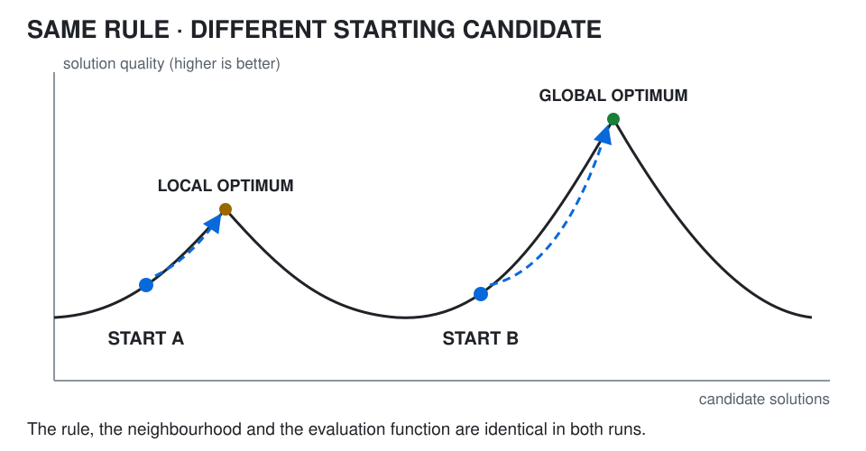
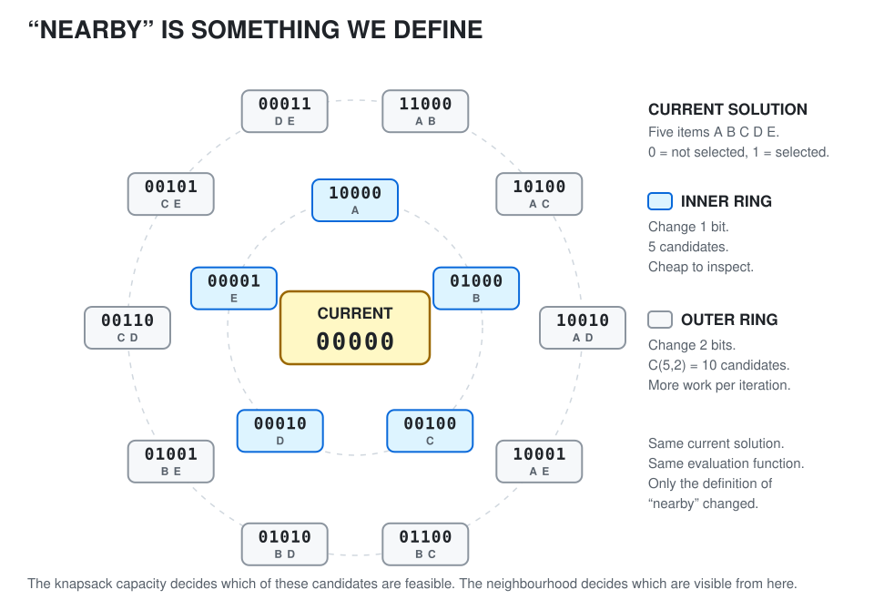
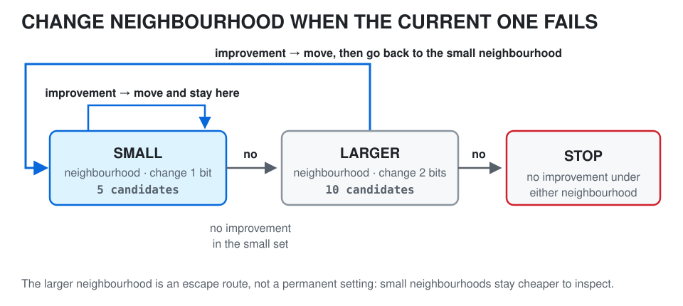
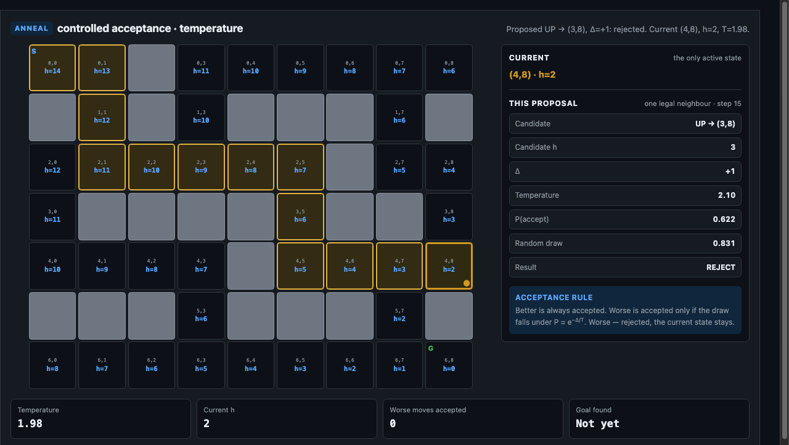
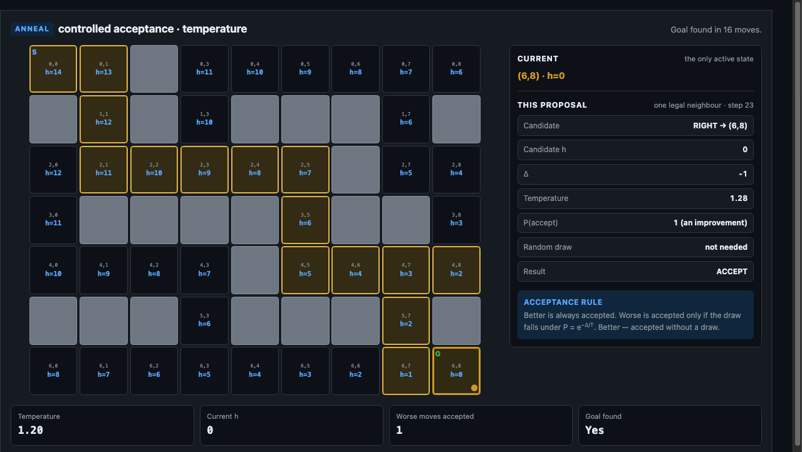
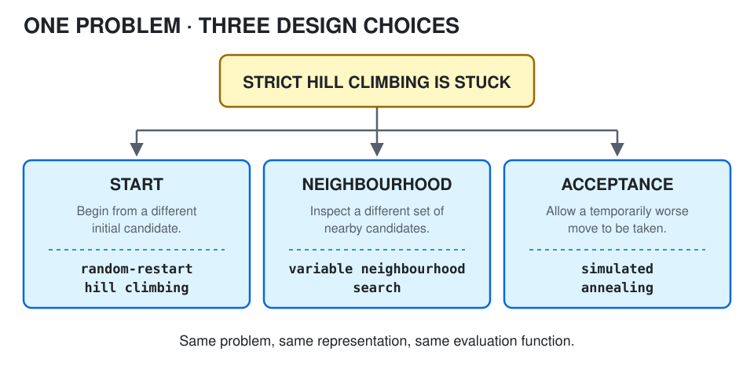

Getting stuck — local best is not global best
Strict hill climbing has one rule:
move only to a strictly better neighbour
When no such neighbour exists, it stops. That tells us something exact about the neighbourhood around the current candidate. It tells us nothing about the rest of the search space.
A local optimum is a candidate better than everything immediately around it. A global optimum is the best candidate in the whole search space. These are different claims, and the first does not imply the second:
“No better neighbour exists” is not the same statement as “no better solution exists.”
The maze makes the gap concrete
At (4,8), h = 2, and both legal neighbours have h = 3. Under our rule — smaller h is better — (4,8) is a local minimum of the heuristic function for this neighbourhood.
Yet the goal is reachable. Week 4 traced the route:
(4,8) → (4,7) → (5,7) → (6,7) → (6,8)
h=2 h=3 h=2 h=1 h=0The search space contains a better state. The algorithm simply cannot reach it while obeying its own acceptance rule, because the first move on that route makes the heuristic worse.
Local search gets stuck because its decisions are local.
It can act only on the candidates it is willing to inspect and the moves it is willing to accept.
What can actually change
The maze, the walls, the goal, the legal moves and Manhattan distance are all fixed. Being stuck is not evidence that the problem is unsolvable, so it is worth asking precisely:
What can the algorithm change without changing the underlying optimisation problem?
There are exactly three answers, and the rest of this page is each one in turn:
1. START somewhere else
2. inspect a different NEIGHBOURHOOD
3. change the ACCEPTANCE rule
(4,8) both legal moves score h = 3 and the strict rule rejects both, so the search stops with legal moves still available. The three panels name the design choices Week 5 can vary. Diagram created for these pages; no external image licence is used.Notice what is not on that list. We are not changing the maze, and we are not changing Manhattan distance. A different heuristic is a different experiment; these three are changes to the search, not to the problem.
Why this matters this week
Week 4 showed a heuristic-guided method getting trapped. Week 5 explains why, and the answer is not “hill climbing is bad”:
a local method can only act on the possibilities and acceptance rules we give it
The cheapest of the three changes comes first. What if we simply start somewhere else?
Try somewhere else — does the start decide the finish?
The formal CT319 notes give this as the first idea for improving hill climbing:
run hill climbing several times, from different initial solutions
Nothing about the climbing rule changes. The starting candidate decides which region of the search space the algorithm meets first, and a strict climber can only improve from where it already is.

Repeating the search from randomly chosen initial candidates and keeping the best result is commonly called random-restart hill climbing. The name matters less than the change it makes:
change START
not the hill-climbing ruleOne run is evidence about one region
A single hill-climbing run tells us where the algorithm ends from that starting point. That is much weaker than a claim about the whole search space. Several starts give evidence from several regions:
start 1 -> local optimum A
start 2 -> local optimum B
start 3 -> local optimum A
start 4 -> better optimum CWe keep the best result seen. But we still cannot say it is globally optimal — only that four starts found nothing better.
Why not restart from everywhere
Because that is exhaustive search again, and avoiding exhaustive search was the point. The trade-off is direct:
more restarts
→ more regions sampled
→ more computationRandom does not mean careless
Initial candidates are often generated randomly, and that is worth reading carefully. Each individual run can still follow a completely deterministic improvement rule. The randomness changes:
where we beginnot:
how we climbThis is a general pattern worth carrying forward: randomness can be a mechanism for exploration. Highlight 4 uses randomness for a different job, in a different place.
Why this matters this week
Restarting avoids trusting a single local optimum too much. But every run still uses the same neighbourhood, so every run is still blind to the same alternatives. If the better candidate lies just outside what our neighbourhood can see, restarting only re-samples the same blindness.
That points at the second change: what counts as nearby?
Change what "nearby" means
We need a second problem here, and the knapsack problem is the right one: five items, each with a weight and a value, and a bag that can only carry so much. Choose the subset worth the most that still fits. Its representation makes “nearby” something we can literally count.
A candidate is a bit string over five items:
A B C D E
0 = item not selected
1 = item selectedHeuristic estimate and evaluation function are not universal synonyms. An evaluation function supplies the score used to compare candidates. In the maze we chose the remaining-cost estimate h(state) as that score. Knapsack instead scores the candidate's quality — total value within capacity — and estimates no remaining distance at all.
Take a one-bit change as the neighbourhood operator. From 00000, that gives exactly five candidates — take A, take B, take C, take D, take E.
Now allow two bits to change at once. For five items there are
C(5,2) = 4 + 3 + 2 + 1 = 10two-item combinations, so the larger neighbourhood exposes ten candidates from the same current solution.

The comparison the formal notes draw is exactly this trade-off:
| Small neighbourhood | Larger neighbourhood | |
|---|---|---|
| Operator | change 1 item | change 2 items |
| Candidates | 5 | 10 |
| Cost per iteration | cheap | higher |
| Chance of an escape | lower | higher |
The escape may be two changes away
Suppose every one-bit neighbour of the current solution is worse. Strict hill climbing using that neighbourhood stops.
Now suppose one two-bit neighbour has a better feasible evaluation. That candidate was always in the search space. The algorithm simply did not classify it as a neighbour.
So the sentence:
this candidate is locally optimal
always means:
this candidate is locally optimal under this neighbourhood definition
Change the definition and the conclusion can change with it. Sometimes the escape is not to accept a worse candidate — it is to redefine what counts as nearby.
Variable neighbourhood search
The formal notes call the resulting method Variable Neighbourhood Search (VNS), described as hill climbing with two neighbourhoods defined instead of one:
current = initial_solution
while True:
better = best_improvement(current, neighbourhood="small")
if better is not None:
current = better
continue # stay in the small neighbourhood
better = best_improvement(current, neighbourhood="large")
if better is not None:
current = better
continue # move, then go back to the small one
break
Why return to the small neighbourhood?
This is the part worth arguing about in class, because “bigger is better” is the tempting wrong answer.
- Small neighbourhoods are cheaper to inspect, and most iterations are ordinary improving iterations.
- After escaping into a new region, cheap improvements are often available again.
- The larger neighbourhood is an escape mechanism, not a permanent setting.
VNS does not say always use the largest neighbourhood. It says change neighbourhood when the current one stops being useful, and change back when it becomes useful again.
A neighbourhood is a design decision
This connects straight back to Week 2:
REPRESENTATION defines what a candidate looks like
NEIGHBOURHOOD defines what nearby alternatives look like
EVALUATION defines what better meansThe one-bit/two-bit idea makes sense for a bit string and no sense at all for something else. In a route problem a neighbourhood might mean reversing part of a route; in scheduling, swapping two jobs; in the maze, moving to a legal adjacent cell.
“Neighbourhood” is a computational definition, not a physical fact.
The algorithm can inspect only what the representation and the neighbourhood operator make available.
Why this matters this week
VNS escapes by changing what the algorithm is allowed to inspect. But there is one more possibility, and the maze has been demonstrating it since Week 4.
At (4,8) the useful move is already in the small neighbourhood. It is legal, it is one step away, and the rule refuses it — because it looks worse.
What happens if we sometimes say yes?
Sometimes go the wrong way — simulated annealing
What if escaping requires getting worse first?
At (4,8) the current heuristic is 2 and both legal exits score 3. Strict hill climbing says worse → reject, and that single rule is the whole trap.
Simulated annealing changes only the acceptance rule:
better move
→ accept
worse move
→ maybe acceptThe important word is maybe. Accepting every worse move would discard the heuristic and let the search wander; accepting none is exactly the behaviour that got stuck. Simulated annealing sits between the two, and controls where.
Temperature controls the willingness
The formal notes motivate that control with the slow cooling of metal. The useful part for us is the behaviour it describes:
HIGH TEMPERATURE
more exploratory · a worse move is often accepted
↓
MEDIUM TEMPERATURE
some willingness to worsen remains
↓
LOW TEMPERATURE
conservative · mostly prefers improvementEarly in the search a substantial decrease in value can be tolerated. Later, less. Near the end, almost none — and the method behaves much like strict hill climbing again.
What controls “maybe”?
A common simulated-annealing rule is
P(accept a worse move) = exp(-Δ / T)
where Δ is how much worse the candidate is and T is the current temperature. Larger worsening is less likely to be accepted; higher temperature makes worsening more likely to be accepted. You do not need to derive this expression to read the behaviour off the run.
Two relationships are enough:
small penalty → easier to accept large penalty → harder to accept
high T → easier to accept low T → harder to acceptWatch it happen at (4,8)
The Search Lab has an Anneal mode that runs this rule on the unchanged maze. Because the acceptance draw is seeded, the same seed replays the same run every time, so the demonstration is reproducible rather than lucky.
With the default seed 743 and the Week 2 successor order, the run descends to (4,8) in fourteen steps — arriving at the exact Week 4 trap — and then meets the same two worse-looking moves. It refuses one and takes the other.
| Step 15 — rejected | Step 16 — accepted |
|---|---|
 | |
UP → (3,8), Δ = +1, T = 2.10, P = 0.622, draw 0.831 → reject | LEFT → (4,7), Δ = +1, T = 1.98, P = 0.603, draw 0.198 → accept |
Figure 5. Two consecutive steps at the same state, under almost the same temperature and almost the same probability. The rule is not “accept worse moves”; it is “accept a worse move with a controlled probability”. Screenshots created for these pages from the Search Lab; no external image licence is used.
The accepted move is LEFT → (4,7) — precisely the move Week 4's strict rule rejected. From there the run continues (5,7) → (6,7) → (6,8) and finishes.

(6,8) in 16 moves, having accepted exactly one worse move and rejected seven others along the way. On the same maze, the strict rule that enters (4,8) stops there permanently. Screenshot created for these pages from the Search Lab; no external image licence is used.In this maze every legal move changes h by exactly one.
Four-direction movement changes one coordinate by one, so Δ is always +1 or −1. That makes the maze a clean demonstration of the temperature half of the rule: with the penalty fixed, only T decides how willing the search is. A problem with varying penalties would exercise the other half.
Can it still fail?
Yes, and it is worth saying so plainly.
cool too quickly → becomes greedy early → may still get stuck
cool more slowly → explores longer → costs more computationThe sequence of temperatures is the cooling schedule, and no single schedule is best for every problem. A run can also spend its budget in poor regions, or cool without ever reaching the goal — the Search Lab reports exactly that when it happens.
The claim is not that simulated annealing solves local search. It is that:
allowing occasional worse moves gives the search an escape mechanism that strict hill climbing does not have
Why this matters this week
Week 4 ended with a reachable goal the algorithm could not reach. The obstacle was never the maze. It was one line of the acceptance rule, and changing that line is enough to reopen the route.
Three ways to escape
All three methods this week attack the same failure, and each changes exactly one design choice.

START — begin from a different initial candidate, and keep the best result across runs. The rule that climbs is untouched. This is random-restart hill climbing.
NEIGHBOURHOOD — enlarge the set of candidates the search may inspect when the current set offers nothing, then return to the cheaper one. This is Variable Neighbourhood Search.
ACCEPTANCE — allow a temporarily worse move, with a probability that falls as the temperature falls. This is simulated annealing.
The comparison worth holding on to is not a ranking. It is that one broad problem, one representation and one evaluation function can produce three genuinely different searches, because three different design choices were varied.